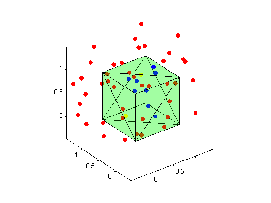
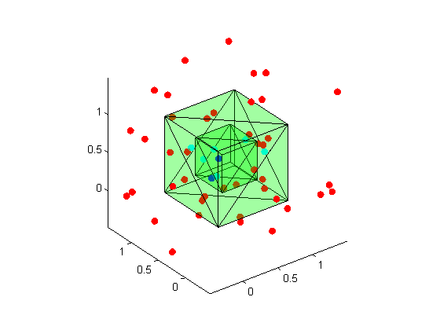

Tutorial and examples of PINPOLYHEDRON function
PINPOLYHEDRON: This function is an implementation of a novel algorithm. It tests whether points are inside/outside/on a polyhedron defined by triangular faces and vertices. It can be used for various complicated models such as non-convex volumes, multi-material bodies, and there is no assumption about orientation of the face normals. Above all, the algorithm is very efficient especially for large-scale problems.To the authors' best knowledge, it is the fastest code in a large-scale setting.
SYNTAX:
output = pinpolyhedron (p,vertices,faces);
INPUT:
p : The points to be tested represented as an Nx3 matrix of XYZ coordinates, e.g., [x1 y1 z1; x2 y2 z2; …].
vertices : The vertices of the polyhedron, in an Mx3 matrix of XYZ coordinates, e.g., [x1 y1 z1; x2 y2 z2; …].
faces : The faces of the polyhedron, in an Mx3 matrix, e.g., [a1,b1,c1; a2,b2,c2; ...].a b c are the index numbers of the three vertices forming the triangular faces.
OUTPUT:
output : an Mx4 array. The first three columns are same as the input p. The function set the fourth column as -1 and 0, standing for outside or inside the polyhedron respectively ,and -2 stands for p on the boundary.
ABOUT multi-material polyhedron:
A body may be composed of different materials, from which one can get a multi-material polyhedron by triangulating its outer boundary and inner boundaries between different materials.
Our algorithm can be used for multi-material polyhedrons too.
The syntax in this case is almost the same. However, the input of faces should be an Mx5 matrix, e.g., [a1,b1,c1,m11, m12; a2,b2,c2,m21,m22; ...]. Here a b c are still index numbers of vertices, and m1 m2 are the two materials on either side of a face. Invoking the function in this way, it will indicate, for a point inside the body, which material the point is in by setting the fourth column output value as the material number. If a testing point is exactly on a triangular face, whether the face is on the outer boundary or an inner one, the function will set the output value as -2.
AUTHOR: Guo YuFei, Jose M. Maisog, Liu JF
REFERENCE : Liu JF, Y.Q. Chen, Jose M. Maisog, George Luta, A new point containment test algorithm based on preprocessing and determining triangles, Computer-Aided Design, vol 42, No.12, December 2010, Pages 1143-1150.
22 Sep 2014 : Version 1.0
Problems or suggestions? Email me: guoyufei2014@gmail.com
More information? Get from: https://stat.ethz.ch/CRAN/web/packages/ptinpoly/
Contents
First example: box(single material model)
b=[0 0 0;1 0 0;1 1 0;0 1 0;0 0 1;1 0 1;1 1 1;0 1 1]; c=[0 1 3;1 3 2;0 5 4;0 1 5;1 2 6;1 6 5;3 6 2;6 7 3;0 4 7;... 0 7 3;4 5 7;6 5 7]; a=[rand(50,3)*2-0.5;0 0.3 0.4;0.5 0.5 1]; c=c+1; out=pinpolyhedron(a,b,c); fv.vertices=b; fv.faces=c; figure, hold on, view(3) patch(fv,'FaceColor','g','FaceAlpha',0.2) [m,n]=size(a); for i=1:m if out(i,4)==0 plot3(out(i,1),out(i,2),out(i,3),'bo','MarkerFaceColor','b') elseif out(i,4)==-1 plot3(out(i,1),out(i,2),out(i,3),'ro','MarkerFaceColor','r') else plot3(out(i,1),out(i,2),out(i,3),'yo','MarkerFaceColor','y') end end axis image
Your model is composed of 1 different materials.
Second example: twonestedboxes(two-material model)
b=[0 0 0;1 0 0;1 1 0;0 1 0;0 0 1;1 0 1;1 1 1;0 1 1;... 0.250000 0.250000 0.250000;0.750000 0.250000 0.250000;... 0.750000 0.750000 0.250000;0.250000 0.750000 0.250000;... 0.250000 0.250000 0.750000;0.750000 0.250000 0.750000;... 0.750000 0.750000 0.750000;0.250000 0.750000 0.750000]; c=[0 1 3 0 -1 1 3 2 -1 0 0 5 4 -1 0 0 1 5 -1 0 1 2 6 -1 0 1 6 5 -1 0 3 6 2 -1 0 6 7 3 0 -1 0 4 7 -1 0 0 7 3 -1 0 4 5 7 -1 0 6 5 7 0 -1 8 9 11 1 0 9 11 10 0 1 8 13 12 0 1 8 9 13 0 1 9 10 14 0 1 9 14 13 0 1 11 14 10 0 1 14 15 11 1 0 8 12 15 0 1 8 15 11 0 1 12 13 15 0 1 14 13 15 1 0]; a=[rand(50,3)*2-0.5]; out=pinpolyhedron(a,b,c); fv.vertices=b; fv.faces=c(:,1:3)+1; figure, hold on, view(3) patch(fv,'FaceColor','g','FaceAlpha',0.2) [m,n]=size(a); for i=1:m switch out(i,4) case 0 plot3(out(i,1),out(i,2),out(i,3),'co','MarkerFaceColor','c') case -1 plot3(out(i,1),out(i,2),out(i,3),'ro','MarkerFaceColor','r') case 1 plot3(out(i,1),out(i,2),out(i,3),'bo','MarkerFaceColor','b') otherwise plot3(out(i,1),out(i,2),out(i,3),'yo','MarkerFaceColor','y') end end axis image
Your model is composed of 2 different materials.